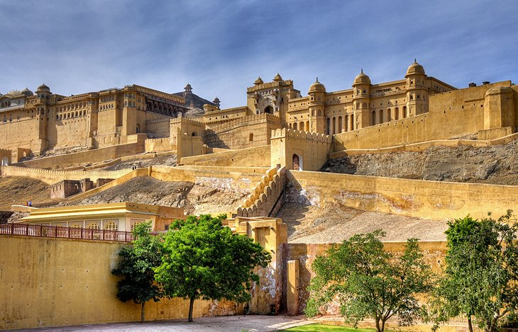

Top-Rated Tourist Attractions in India
India is a vibrant land of startling contrasts where both the traditional and modern worlds meet. The world's seventh largest nation by area and the second largest in terms of population, India boasts a rich heritage that's the result of centuries of different cultures and religions leaving their mark. Things to do in India include the opportunity to experience an array of sacred sites and spiritual encounters, while nature lovers will enjoy its sun-washed beaches, lush national parks, and exciting wildlife sanctuaries.
1.The Holy City of Varanasi

Dating back to the 8th century BC, Varanasi is one of the oldest still inhabited cities in the world. A major pilgrimage center for Hindus, this holy city has long been associated with the mighty Ganges River, one of the faith's most important religious symbols. Varanasi offers many reasons to visit, not least of them the chance to explore the Old Quarter adjacent to the Ganges where you'll find the Kashi Vishwanath Temple, built in 1780. The New Vishwanath Temple with its seven separate temples is also of interest. Also worth seeing is Banaras Hindu University, established in 1917 and noted for its massive library with more than a million books, and the superb Bharat Kala Bhavan museum featuring fine collections of miniature paintings, sculptures, palm-leaf manuscripts, and local history exhibits.
2.The Golden Temple of Amritsar

Founded in 1577 by Ram Das, Amritsar is an important hub of Sikh history and culture. The main attraction here is Harmandir Sahib, opened in 1604 and still often referred to as the Golden Temple for its beautiful gold decoration. The holiest of India's many Sikh shrines (it also attracts many Hindus and people of other faiths), the temple was built in a blend of Hindu and Islamic styles. Its lower marble section features such flourishes as ornate inlaid floral and animal motifs, while the large golden dome represents a lotus flower, a symbol of purity to Sikhs. In addition to its splendid design, visitors are equally impressed with the temple's spiritual atmosphere, an effect enhanced by the prayers continuously chanted from the Sikh holy book and broadcast throughout the complex.
So named for the yellow sandstone used in most of its buildings, the Golden City of Jaisalmer is an oasis of splendid old architecture that rises from the sand dunes of the Thar Desert. Once a strategic outpost, today the city is filled with splendid old mansions; magnificent gateways; and the massive Jaisalmer Fort, also known as the Golden Fort, a daunting 12th-century structure that rises high above the town. In addition to its palaces, temples, and fine old homes, the fortress boasts 99 bastions along with massive gates leading to its main courtyard where you'll find the seven-story-tall Maharaja's Palace. Started in the early 1500s and added to by successive rulers right up until the 19th century, the palace offers sections open to the public, including areas beautifully decorated with tiles from Italy and China, and intricately carved stone doors.
3.The Golden City of Jaisalmer

Construction of Hyderabad's Mecca Masjid, one of the world's largest mosques – and one of the oldest in India – began in 1614 during Mohammed Quli Qutub Shah's reign and took almost 80 years to complete. Large enough to accommodate 10,000 worshipers, this beautiful mosque's 15 enormous arches and pillars were each wrought from single slabs of black granite dragged to the site by huge cattle trains reputedly consisting of up to 1,400 bulls. Taking its name from the bricks above the central gate that were brought here from Mecca, this impressive complex features highlights such as its main gateway, a huge plaza, and a large manmade pond. There's also a room that houses the hair of Prophet Mohammed. Other notable features include inscriptions from the Quran above many of the arches and doors, the exquisite roof of the main hall, and the cornices around the entire mosque structure. Look out for the exquisite floral motifs and friezes over the arches.
4.Mecca Masjid, Hyderabad

5.The Beaches of Goa

Long known within India as the "go-to" destination for those seeking a great beach holiday, Goa's beautiful western coastline, overlooking the Arabian Sea, has only recently been discovered by tourists from overseas. Goa's more than 60 miles of coastline is home to some of the world's loveliest beaches, each with their own particular appeal. For those looking for peace and quiet, isolated Agonda Beach is a good choice, while Calangute Beach is by far the most commercial and crowded. For those in search of posh resorts, yoga getaways, and spa vacations, the beaches of Mandrem, Morjim, and Ashwem are fashionable among wealthy Indians and Westerners alike. Palolem is another one of Goa's popular beaches in a beautiful setting.
6.The Gateway of India, Mumbai
.jpg)
Standing an impressive 26 meters tall and overlooking the Arabian Sea, the iconic Gateway of India is a must-see when in Mumbai. Built to commemorate the arrival of King George V and his wife Queen Mary in 1911, this stunning piece of architecture was opened with much pomp and ceremony in 1924 and was, for a while, the tallest structure in the city. Constructed entirely of yellow basalt and concrete and notable for its Indo-Saracenic design, the Gateway of India was also the scene of a rather less jubilant procession of British soldiers in 1948 when India gained its independence. These days, the huge archway provides a stunning backdrop that is as popular among locals as it is tourists. Hot Tip: After visiting the Gateway of India, pop over to the adjacent Taj Mahal Palace and Tower for a delectable High Tea, a fun thing to do in Mumbai since this lovely luxury hotel opened in 1903.
One of South India's most popular tourist attractions, Periyar National Park and Wildlife Sanctuary is centered around a lake built by British engineers in 1895 for irrigation and to provide water to the city of Madurai. Established in 1934, this beautiful park is home to numerous species of mammals, including a large free-roaming Indian elephant population, wild boar, otters, the lion-tailed macaque, and more than 20 Bengal tigers. Bird-watching is a popular activity with frequent sightings of species such as darters, storks, kingfishers, hornbills, and racket-tailed drongos, along with many interesting varieties of butterflies. The best ways to enjoy the park's splendid mountain scenery are to take a lake cruise or guided jungle walk, the latter allowing visitors a chance to come face to face with elephant herds and observe other wildlife from watchtowers and viewing platforms.
7.Periyar National Park and Wildlife Sanctuary, Madurai

The Ganges River, or "Ganga" after the Hindu goddess, has long been one of India's most revered natural wonders. It's also one of the country's leading attractions, drawing crowds of Indian nationals to partake in its religious ceremonies, as well as tourists to enjoy the splendor of this mighty river. While there are a number of cities dotted along the river, it's to the city of Varanasi that most tourists will travel to experience the Ganges and the cultural attractions that have sprung up along its banks. Although relatively small by Indian standards – its population is around 1.2 million people – the city is chock-full of temples and other important religious sites, many of them focused on worship of (or on) the Ganges. Numerous "ghats" are set along the river banks, making it easy for worshippers and tourists alike to get up close. Made up of sometimes steep steps leading directly into the water, there are in fact 88 of these entry points to the Ganges.
8.The Ganges River

9.The Ellora Caves, Aurangabad

The famous monumental Ellora Caves were built between the 5th and 10th centuries by Buddhist, Jain, and Hindu monks, and make for an excellent excursion from Mumbai, some 300 kilometers to the west. Now a UNESCO World Heritage Site, this remarkable collection of 34 carved monasteries, chapels, and temples – 12 of them Buddhist, 17 Hindu, and five belonging to the Jain faith – were built in close proximity to each other, a reflection of the religious tolerance that existed during this period of Indian history. Of the Buddhist monastery caves, highlights include a number of shrines featuring carvings of Buddha and saints dating from the 5th to 7th centuries, as well as the stunning Carpenter's Cave, considered one of the finest in India.
10.Amer Fort, Jaipur
Amer Fort (often also spelt "Amber") was built as a fortified palace in 1592 by Maharaja Man Singh I and has long served as the capital of Jaipur. Carved high up into the hillside, the fort is accessible on foot via a steep climb or by shuttle rides from the town below (better still, let an elephant do the work). Highlights include Jaleb Chowk, the first courtyard, with its many decorated elephants, and the Shila Devi Temple, dedicated to the goddess of war. Also of note is the adjoining Hall of Public Audience (Diwan-i-Am) with its finely decorated walls and terraces frequented by monkeys. Other highlights include Sukh Niwas (the Hall of Pleasure) with its many flowerbeds and a channel once used to carry cooling water, and the Temple of Victory (Jai Mandir), notable for its many decorative panels, colorful ceilings, and excellent views over the palace and the lake below.